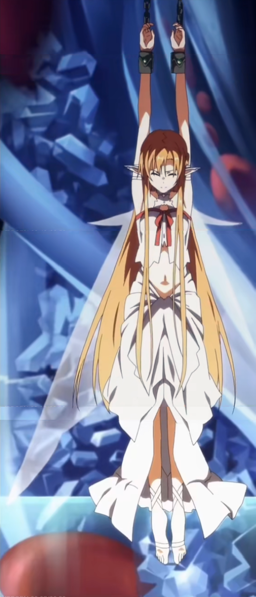
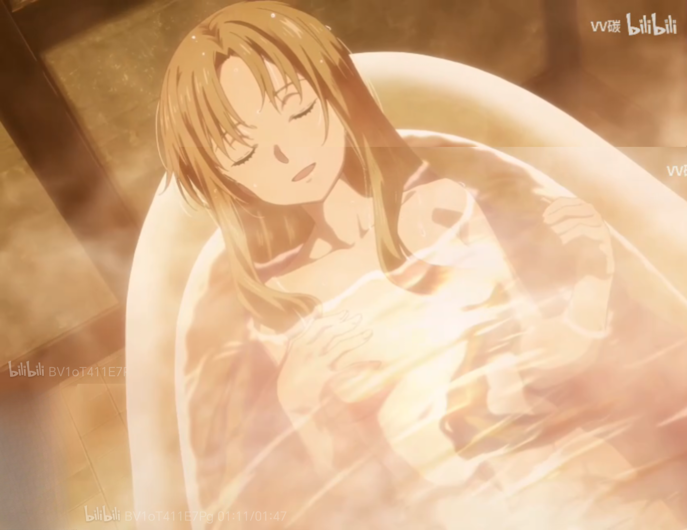
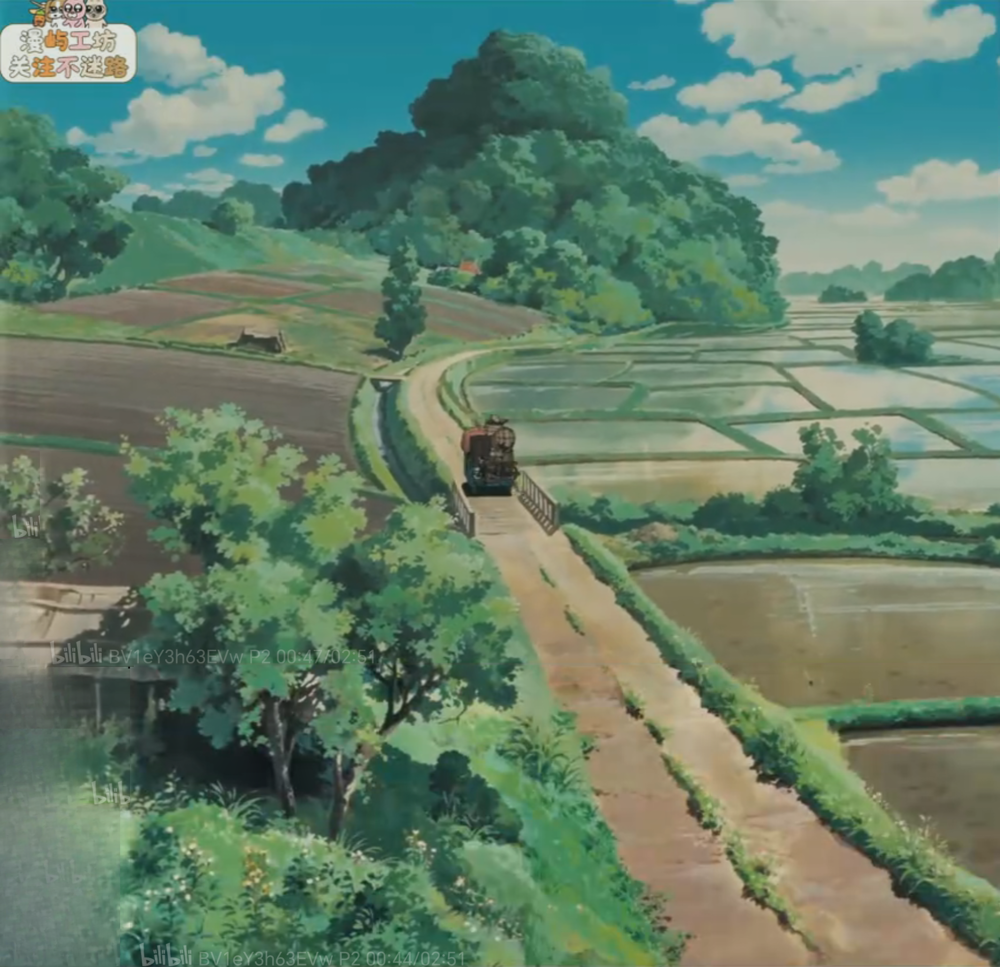
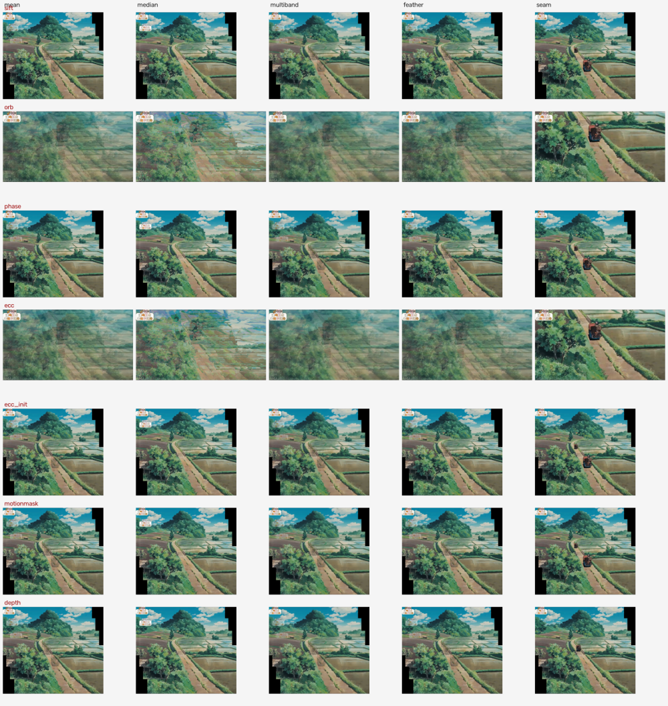
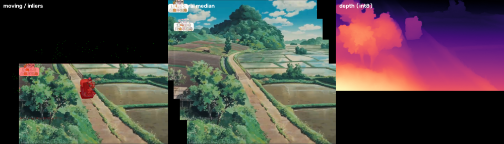
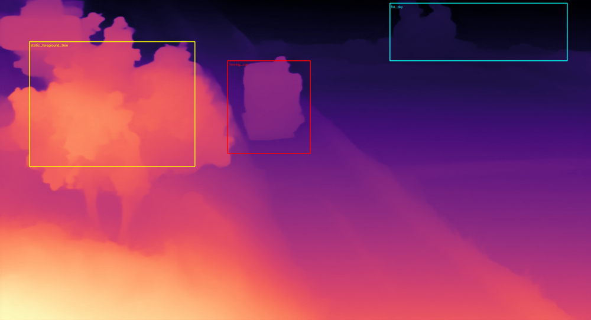
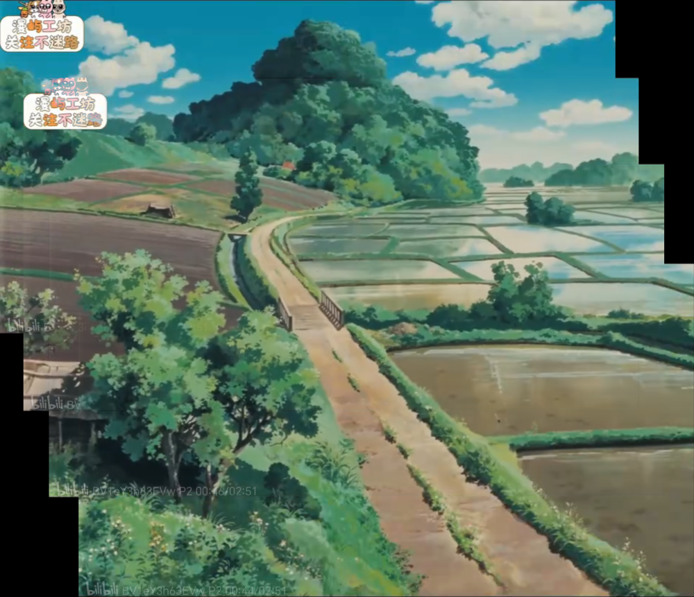
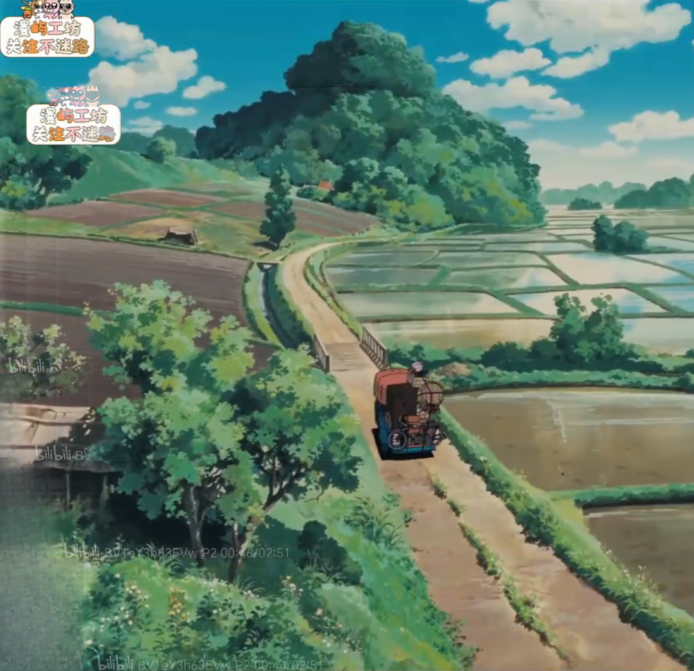
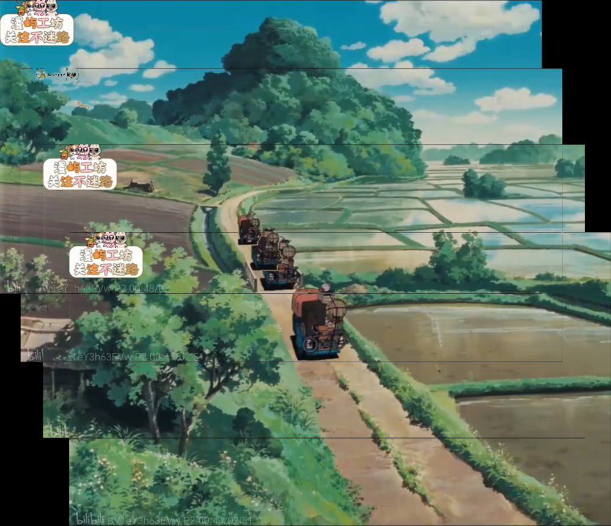

拼接与黑块清理技术报告
从纯平移拼接到黑块清理、接缝曝光修复的完整算法与实测指标；Markdown 原文见 docs/拼接清理报告.md。
两个素材目录：亚丝娜镜头1（6 帧垂直摇镜，6×2411×1200）、亚丝娜镜头2（3 帧，3×2134×1200，画面极淡）。
每帧先裁掉截图自带的 letterbox 黑边，再进入拼接。
1. 拼接：src/translate_stitch.py
不用 cv2.Stitcher 的默认透视投影（会把人物头部拉宽、直线变弯），改用自由度最低的纯平移：
- 自动裁黑边
crop_black_border：按列/行的非黑比例保守裁切。不裁的话相位相关/SIFT 会被黑边钉死成 0 位移。 - 自适应匹配：每对图用原图和 CLAHE 各跑一次纯平移 RANSAC，按内点率取更可靠者（冰晶用 CLAHE 内点多、水雾用原图内点率高）。
- 布局：内点数作边权的 Kruskal 最大生成树，强边优先，避免淡图弱边把位置拉错。
- 同帧去重：位移 ≈0 的一组只留 Laplacian 方差最大（最清晰）的一张。
- 融合：
GraphCutSeamFinder（COST_COLOR_GRAD）在 1/4 分辨率找接缝再上采样 mask，把边界藏到内容边缘。 - 输出：
translate_stitched_raw.png（原始画布）、translate_stitched.png（裁边版）、seam_mask.png。
实测结果：镜头1 → 3658×1953 全身像（头顶→脸→白裙→腿→脚）；镜头2 → 1650×2371 特写。
2. 清理：src/clean_stitched.py
原始拼接图剩下三类问题：未覆盖的纯黑矩形、横向曝光台阶、四周 1~2px 亮/暗边线。
2.1 三个关键 bug
① 暗部被误判成黑块 → 补成纯白
旧流程用 gray < 20 判定「未覆盖区」，把镜头1 左上角本来就是暗蓝/暗红的背景（BGR≈17,11,29）当成黑块，LaMa 填成了 (255,255,255) 的一片白。
→ 改为三通道都 < 6 才算没被任何帧覆盖。画面暗部饱和度较高，很难三通道同时压到 6 以下。
② LaMa 输出被重复归一化
lama_fp32.onnx 直接输出 0~255，旧代码又乘了一次 255 → 修补区全白（镜头2 左下角）。
→ 仅当 out.max() <= 1.5 时才放大。
③ 裁切边界落在「暗部」而不是「纯黑」
gray<20 让裁切线提前，白扔了有效画面：镜头1 少 122px、镜头2 少 237px。修正后边界落在真正的纯黑起点（镜头1 x=1580、镜头2 x=2134）。
2.2 接缝曝光台阶
接缝两侧来自不同时间的帧，画面在变亮/变暗，形成横向硬边（实测镜头1 行均值突变 11.4、镜头2 突变 9.4 灰阶）。单一常数补偿不够——逐列实测差异从 -17 到 +17 都有，常数会在别处制造新断层。
逐列估计色差 S(x) = mean[y+1..y+6] - mean[y-6..y-1] (W×3)
↓ 沿 x 高斯平滑 (σ=40, 核 101px) → 平滑二维补偿场
接缝处全额补偿，沿下方 T 行用 w(t) = (1 - t/T)² 衰减到 0
↓ T = min(剩余高度, 700px)：镜头1 取 700、镜头2 取 451
局部纵向柔化：接缝 ±5 行 σ=1.8 的 y 向高斯（横向完全不卷积，动画线条不糊）要点是衰减而非截断：补偿量摊到 450~700 行，每行变化 < 0.03 灰阶，肉眼不可察，也不会像直接剪切那样产生新台阶。
2.3 边线
warpAffine 会在四周留下 1~2px 亮/暗线。旧判据「整行均值 < 25」裁不掉只占部分行的黑线（实测首行均值 34.9、末行 53.9）。
→ 改成「近黑像素占比 ≥ 0.35」，再加一层相对判据：贴边行/列的均值与往里 3 行/列的均值差太多、或逐像素 MAE > 7，就裁掉 1px（每边最多 4px）。
3. 结果
| 镜头 | 修复前 | 修复后 | 最大行跳变 | 最大列跳变 | 纯黑残留 |
|---|---|---|---|---|---|
| 亚丝娜镜头1 | 1453×3653 | 1573×3652 | 11.4 → 4.9 | 7.4 → 2.9 | 0.00% |
| 亚丝娜镜头2 | 1897×1649 | 2131×1649 | 9.4 → 1.8 | 9.4 → 2.5 | 0.00% |
修复后剩余的最大行跳变已不在接缝行，而是原画面本身的内容边缘。
校验：
python3 -c "import cv2;im=cv2.imread('results/亚丝娜镜头1_clean.png');print((im.max(axis=2)<8).mean()*100)"
# 0.04. 遗留问题（数据本身限制）
- 镜头2 的 bilibili 水印（右上 logo、
BV1oT411E7eg 01:14/01:47、01:11/01:47）。背景是有细节的暖光，涂抹痕迹会比水印更明显，故保留。 - 镜头1 接缝 1:1 放大仍有极淡重影线——两帧重叠内容在接缝两侧轻微错位（非曝光问题，MSE 曲线无最优位移），整图观看不可见。
- 镜头1 左下红色模糊块、斜向蓝色光带是原画面内容，不是拼接缺陷。
5. 后续开发：单命令流水线与逐帧曝光补偿
上表是上一版清理脚本的实测记录（数值口径相同、输入画布不同，故不与下表直接对比）。现在把「拼接 → 清理 → 质检」收成一条命令 collage.py（在 main 分支根目录）：
python3 collage.py 亚丝娜镜头1
python3 collage.py "frames/*.png" --out result/ --model models/lama_fp32.onnx
python3 collage.py 亚丝娜镜头1 --skip-stitch
python3 collage.py --selftest没有硬编码绝对路径：模型默认取脚本同目录 models/lama_fp32.onnx，输出默认写输入目录；所有融合模式都写 translate_stitched_raw.png，所以清理阶段可以独立重跑。产物为裁边图、最终清理图、接缝 mask 和 qc_report.json。
5.1 曝光补偿从「事后压平」前移到「拼接前对齐」
第 2.2 节的斜坡修复是事后补救：台阶已经形成，只能沿下方几百行把色差摊薄。现在在拼接阶段先做逐帧光度对齐：
_pair_photometry()在两帧重叠的有效像素上估计逐通道gain/offset：gain取最小二乘斜率cov/var再向 1 收缩 0.85（抵抗重叠区视差造成的过冲），offset用中位数残差（抗局部内容不一致），并剔除过曝/近黑像素。exposure_chain()不再把所有帧都对齐到第一帧，而是按重叠像素数建最大生成树，沿最强重叠边把参数传播到 anchor。只有真正重叠的帧之间才估计，避免弱重叠或重复纹理把亮度拉偏。- 补偿作用在融合前的源帧上，接缝两侧自然连续，清理阶段的斜坡只需处理剩余残差。
5.2 不靠肉眼：接缝台阶 A/B 自动判据
seam_cost() 只按有效像素求行均值、并聚焦接缝附近的行，得到一个「最大亮度跳变」标量。photometry=auto 时同一布局跑两遍（关 / 开补偿），开启后至少好 2% 才采用：
| 素材 | 关闭 | 开启 | 判定 |
|---|---|---|---|
| 亚丝娜镜头1 | 10.00 | 5.54 | 启用 |
| 亚丝娜镜头2 | 2.00 | 8.86 | 跳过 |
| 龙猫 | 5.64 | 5.15 | 启用 |
镜头2 说明判据确实必要：它的帧间差异主要来自内容与水印而非曝光，硬套逐帧补偿反而把局部台阶放大 4 倍。--photometry on / off 可强制覆盖。
5.3 量化质检与三组实测
qc_report.json 记录 stitched / raw / clean 三个阶段的尺寸、均值亮度、纯黑占比、最大行/列跳变及其位置，回归时直接 diff。--selftest 用合成三帧不同曝光序列验证补偿链，重叠区 MAE 10.29/19.77 → 1.46/3.17。
| 素材 | 最终尺寸 | 纯黑区 | 最大行跳变 | 最大列跳变 |
|---|---|---|---|---|
| 亚丝娜镜头1 | 1574×3652 | 5.223% → 0.000% | 26.55 → 4.84 | 70.57 → 2.74 |
| 亚丝娜镜头2 | 2134×1649 | 5.470% → 0.000% | 94.26 → 2.23 | 105.08 → 3.32 |
| 龙猫 | 2130×2061 | 6.706% → 0.000% | 26.55 → 4.17 | 20.10 → 1.32 |
三组素材黑区全部清零，且第三组 龙猫/ 是本次新加入的素材，未做任何参数特调——流水线与 A/B 判据都不依赖特定图。
5.4 最新结果图



6. 方法层 XY 对照：斜向 pan 与运动主体
新素材 龙猫/（4 帧，裁边后 2130×1156）是斜向上运镜、画面里有运动的汽车：背景随镜头平移，汽车自己也在动，另外还有屏幕固定位置的 bilibili 水印与左上角台标。这正是「是否需要主体识别 / 深度估计来忽略主体」的典型场景。
method_lab.py 做了 7 种位移估计 / 主体处理（X 轴）× 5 种融合策略（Y 轴）= 35 组对照，所有方法共用同一套 Kruskal 最大生成树布局，只有估计器不同。完整矩阵见 main 分支的 龙猫/method_lab/results.json 与 report.md。
6.1 X 轴：位移估计（含 x / y 两个分量）
| 方法 | pos 跨度 x / y | 相对 SIFT 偏差 | 单对耗时 | 结论 |
|---|---|---|---|---|
sift（现有算法） | 271.8 / 912.9 | 0 | 1992ms | baseline |
phase 相位相关 | 271.2 / 913.5 | 0.88px | 90ms | 快 22 倍，几乎无损 |
ecc_init phase 粗配准 + ECC 精修 | 271.4 / 912.3 | 0.60px | 1111ms | 必须粗配准 |
motionmask 帧差剔主体 | 272.4 / 913.2 | 0.69px | 881ms | 与 baseline 一致 |
depth Depth Anything V2 Small int8 按深度分位剔点 | 273.5 / 912.1 | 1.83px | 1078ms + 722ms/帧 | 与 baseline 一致，且剔错了对象（见 6.5） |
orb | 0 / 2 | 953px | 523ms | 失败：动画平坦区 (0,0) 假峰 |
ecc 纯 ECC | 0.2 / 0.2 | 952px | 1395ms | 失败：大位移超出收敛域 |
斜向运镜里 y 分量约是 x 的 3.4 倍；phase 与 SIFT 在 x / y 两个分量上几乎完全一致。ORB 在 6 个图片对里有 5 个收敛到 (0,0) 假峰（动画平坦区描述子重复，假峰内点率反而更高）；纯 ECC 从单位阵起步掉进 (0,0) 局部极小，合成位移测试确认初值必须是 +d。
6.2 运动主体：RANSAC 已经替我们做了「主体识别」
- 运动 / 非背景区域只占有效画面 3.96%，而纯平移 RANSAC 的强峰有 1000+ 内点，来自背景。
- 绿色内点几乎不落在红色的车身上（
method_lab_motion.png左图）；车身特征点不符合全局平移，自动成为外点。 - 显式做「主体识别」的
motionmask与depth相对 baseline 的最大布局偏差只有 0.69px / 1.83px → 深度估计在这个任务上没有带来几何收益。
6.3 Y 轴：融合决定主体与固定 OSD 的命运
OSD = 融合图里检测到几次固定台标（台标在每帧屏幕坐标不动，拼接后按各帧位置重复出现）。
| 融合 | 台标份数 | 接缝台阶 | 融合耗时 | 运动汽车 |
|---|---|---|---|---|
mean | 4 | 35.46 | 225ms | 4 个位置平均成淡影 |
median 时序中值 | 2 | 5.70 | 1301ms | 被完全抹掉（背景最干净） |
multiband | 4 | 12.95 | 263ms | 淡影 |
feather | 4 | 37.61 | 124ms | 淡影 |
seam GraphCut | 1 | 5.64 | 2937ms | 恰好一辆车 |
所以「忽略主体」要分清三层：① 估计位移时忽略（纯平移 RANSAC 已做到）；② 融合时消除重复主体（median / seam）；③ 是否保留一个主体（只有 seam）。深度估计对固定 OSD 无效——OSD 没有深度。


6.4 速度、浏览器部署与相关论文
phase 单对约 90ms，OpenCV.js 原生支持 phaseCorrelate；配合 seam 或 median 融合即可，不必跑深度模型。若确实要做主体级 3D / 景深效果，再上 onnx-community/depth-anything-v2-small 的 int8 ONNX（26 MB，CPU ~0.7s/帧，WebGPU 更快），用 transformers.js 的 depth-estimation pipeline 或 ONNX Runtime Web 加载同一份权重。注意本实验里它只用于「按深度分位剔匹配点」，既被 RANSAC 免费替代，实际还剔错了对象（见 6.5）。
论文 / 项目索引（FE2E · Jasmine · D4RD · Marigold / V2 · Metric3D v2 · BetterDepth · Depth Anything V2 · MiDaS · PlaneToPBR · 3D/MC 工具链）见 main 分支 龙猫/method_lab/report.md 第 5 节，带会议年份与仓库链接。
6.5 深度估计为什么不是解决办法（附完整模型与一键命令）
深度给的是「远近」，不是「动静」：静态前景树完全可能比运动的车更靠近镜头，所以「深度估计 → 剔近景 → 忽略运动主体」这条链本身就不成立。method_lab.py --depth-audit 用同一份权重实测：
| 区域 | 深度均值 | 匹配点 | 按 70 分位剔「近景」时被剔掉 |
|---|---|---|---|
| 静态前景树（不动） | 3.980 | 484 | 418 |
| 运动汽车（要忽略的） | 2.076 | 16 | 9 |
| 远景天空 | 0.463 | 83 | 0 |
树比车「近」近一倍；深度掩膜实际在剔静止的树（86% 的点），车上 16 个点只剔掉 9 个。depth 方法的方向自适应之所以在 keep_far / keep_near 之间 3:3 摇摆，正因为深度排序与「是否在运动」无关、本来就没有正确方向。识别运动主体要靠跨帧一致性（帧差 / 光流 / RANSAC 外点），不是单帧几何。

模型完整规格
| 项 | 值 |
|---|---|
| HuggingFace 仓库 | onnx-community/depth-anything-v2-small |
| 权重文件 | onnx/model_int8.onnx |
| 原模型 | depth-anything/Depth-Anything-V2-Small（ViT-S 编码器 + DPT 头），Apache-2.0 |
| 大小 / sha256 | 27,258,801 B（26 MB） / 01aa7a23de3f4a0ee1a2bb9997e6918104c85a9f95dea46d27b9b3fb0c6b9001 |
| 输入 | pixel_values float32 [1,3,518,518]，RGB，ImageNet mean/std，bicubic resize 到 518×518 |
| 输出 | predicted_depth [1,518,518] 相对深度（实测值越大越近：树 3.98 > 车 2.08 > 天空 0.46） |
| 推理 | ONNX Runtime 1.31.1 CPU，约 0.5–0.7s/帧；浏览器用 transformers.js / ONNX Runtime Web（WebGPU fp16 / WASM 回退） |
| 下载 URL | https://huggingface.co/onnx-community/depth-anything-v2-small/resolve/main/onnx/model_int8.onnx |
一键下载与完整运行命令
从零到跑通（项目根目录，完整命令，不简写）：
uv venv /tmp/anime-venv
uv pip install --python /tmp/anime-venv/bin/python opencv-python-headless numpy onnxruntime
bash setup_depth.sh --check
/tmp/anime-venv/bin/python method_lab.py 龙猫
/tmp/anime-venv/bin/python method_lab.py 龙猫 --depth-auditsetup_depth.sh 会下载上面的权重、校验字节数与 sha256；--check 额外用 ONNX Runtime 跑一次 518×518 随机输入，打印输入输出规格。等价的裸下载命令：
curl -L --fail -o models/depth_anything_v2_small_int8.onnx \
https://huggingface.co/onnx-community/depth-anything-v2-small/resolve/main/onnx/model_int8.onnx不下模型也能跑（跳过 depth，其余 6 种方法照常）：
/tmp/anime-venv/bin/python method_lab.py 龙猫 --no-depth
/tmp/anime-venv/bin/python method_lab.py 龙猫 --quick6.6 三版可控出图：脚本、场景与完整生成步骤
「刚好没车 / 恰好一辆车 / 四辆车」不是巧合：斜向 pan 让各帧落在画布不同位置，车在帧内也在移动，所以画布上任一像素最多只有 1 帧看到车，其余帧都是背景。
执行脚本 method_lab.py --subject-modes（内部 subject_modes()），完整命令：
cd /workspace/anime
uv venv /tmp/anime-venv
uv pip install --python /tmp/anime-venv/bin/python opencv-python-headless numpy onnxruntime
/tmp/anime-venv/bin/python method_lab.py 龙猫 --subject-modes全自动、无特调、不需要深度模型：① SIFT + 纯平移 RANSAC 估计位置，warp_stack() 把 4 帧放到同一画布；② median_full() 跨帧中值得到背景共识，每帧与它差值 >45 的像素标为运动区；③ 排除全部运动区做加权平均 → 0 辆车；④ 只取运动区最大连通域（车本体，自动滤掉台标/细线）贴回 → 恰好 1 辆；⑤ 把每帧完整运动区都贴回 → 4 个位置的车。
| 输出 | 场景 |
|---|---|
background_only.png | 纯背景重建，检查配准 / 黑边 / 接缝质量 |
one_subject.png | 观赏用最终图：恰好一辆车 |
all_subjects.png | 研究用：4 帧车的位置与运动轨迹 |
subject_masks.png | 每帧检测到的车本体掩膜（调试 / 复现） |
subject_modes.json | 阈值、各帧运动/车本体像素数、贴回帧号 |



观赏版去黑边，用项目现成的自动化清理流程（LaMa 补未覆盖区，非特调）：
/tmp/anime-venv/bin/python -c "import clean_stitched as cs; cs.clean('龙猫/method_lab/one_subject.png', '龙猫/method_lab/one_subject_clean.png', seam=False)"→ one_subject_clean.png（2130×2061，黑区清零）；另外两版也可同样清理。
固定水印没有去除：左上角「猫屿工坊」台标与左下 bilibili 水印在三版图里都保留。试过两种通用自动化检测（帧内坐标跨帧投票 / 帧间时变低+边缘强），前者因画布边缘覆盖帧数不足只抓到细线，后者把背景纹理大面积误判成 OSD、把画面填花；按「不做特调」原则都已撤回，代码里没有去水印分支，因此也没有去水印的生成步骤。osd_count() 的左上角模板只用于数台标份数打分，不参与出图。完整说明见 main 分支 龙猫/method_lab/report.md 第 3.2 节与 README。
6.7 one_subject 定稿、logo 实测与后续路线
定稿：one_subject_clean.png（2130×2061）是本轮观赏用定稿，sha256 76a61b643737f510cb2fa06defc44aba1ff92cbbb5fe78c02d3e174cb6b96240。4 张输入图、三版输出图、完整运行命令、固定参数（thr=45、选帧 0）与可直接执行的 sha256sum -c 校验清单，见 main 分支根目录 README.md 的「one_subject 定稿」一节。不引入版本号机制：后续持续优化一律写新的输出文件名，不覆盖这些定稿文件。
用 osd_count() 实测：seam 版 1 份台标，观赏版 2 份（1 份清晰 + 1 份被加权平均稀释成半透明），all_subjects.png 3 份。份数减少不是识别后删除：台标随各帧落在画布不同位置，同一画布像素最多 1 帧有台标，跨帧中值 / 排除运动区的加权平均自然把它滤淡，largest_component() 也只贴回车本体。程序对「什么是 logo」无知、无状态、无感知，剩下的 logo 不再处理。
后续路线：参考 B 站「动画演出分析工具」两张截图（Screenshot_20261109_181903_...jpg 是 CUT 列表 + 预览 + 时间轴，Screenshot_20261109_181911_...jpg 是长图上叠多色矩形框 + 一根从首帧指向末帧中心的箭头、右侧 PAN Up/Down/Left/Right 分类）。视觉层只是「框 + 箭头」，比较简陋、本身价值有限，有用的是结构化数据和把可用镜头批量挑出来产出长图。规划：
- 完整视频 →
ffmpeg切镜头（硬切用select='gt(scene,0.4)'基线，渐变/误检多时换 TransNetV2）； - 每个镜头抽首尾帧，用现成的
phaseCorrelate/ 纯平移 RANSAC 内点率判定「是否为适用的平移镜头」——零额外模型； - 适用的镜头走
collage.py合并，得到一批长图； - 同时导出
layout.json：每帧 bbox（x,y,w,h+ 颜色）、first_center→last_center、direction（按首尾中心dy符号自动归up/down，dx同理）、frames、fit_score。服务端异步出缩略图 + JSON，手机端面板 / 网页端按数据画 SVG，不做重客户端。
两个检测仓库已克隆评估（anime/methods/，.gitignore 排除、不随项目提交）：
| 仓库 | 实际用途 | 体积 | 依赖 / 权重 | 结论 |
|---|---|---|---|---|
SWHL/TransitionDetect | TransNetV2 转场检测 + 自动切镜头 | 59 MB（30 MB .pth + 29 MB .git） | torch、ffmpeg-python、PyYAML；权重随包、CPU 可跑、输入 48×27 | 模型轻但依赖重，先走 ffmpeg 基线，误检多再当可选后端 |
FudanCVL/SAAS | 跨镜头半监督视频目标分割（SAM2 扩展），不是镜头切分/分类 | 37 MB（纯代码与示例图，仓库无权重） | torch 2.7 + CUDA、需编译 CUDA 扩展、权重另行下载 | 任务不对口且必须 GPU，轻量化维度直接排除 |
本机环境只有 opencv-python-headless / numpy / onnxruntime，无 torch、无系统 ffmpeg，因此两仓库目前只做静态评估、未接入主流程。